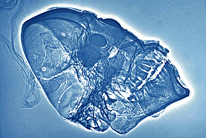

Turquoise Mosaics This startling object was not made on a wooden former, like most of the mosaics; instead the mosaic design was laid down on a human skull, which we can see on the radiograph. The design on the skull was produced by the use of turquoise (a naturally occurring bright blue-green copper phosphate mineral), and black lignite (a soft coal, rather like jet). The eyes are of pyrite (fool's gold), surrounded by circles of white shell; red shell was used for the nose. Click on the image to see a close up of the eyes. |